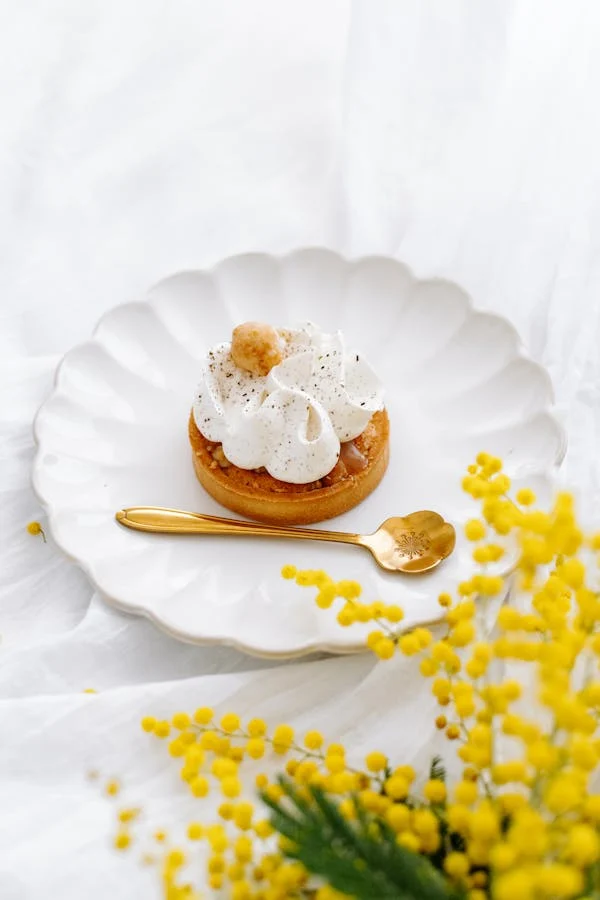

Mountain is something that makes my Heart warm.
"Keep your face to the sunshine and you cannot see the shadow. It's what sunflowers do."
— Helen Keller
"Lost in time, found in the charm of old streets."
"Where stories are sold by the scoop, and time slows between the stalls."
Ah, the moon — always a vibe.
Breathe in the wind, ride out the stress.
Sakura: a gentle reminder that beauty doesn't last forever, so love it while it's here.
Don't just build a career — build a life you don't need a vacation from.
She wore the red of autumn — bold, burning, and beautiful in her goodbye.
When the sky wears pink, it's nature's way of saying 'everything is going to be okay.
There's something magic about an old road — it's the past and the future, intertwined in dust and daylight.
Life changes in a heartbeat, sometimes without warning — but that's where the magic happens.

Breakfast is the foundation of the day — start it right, and everything else will fall into place.
The city whispers in echoes of the past, where every corner holds a story waiting to be told.
A cup of tea and a good book — the perfect escape.
The best nights are those wrapped in the soft glow of yesterday, where everything feels like it’s been lived before.